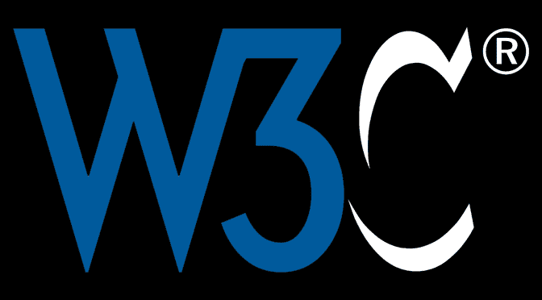

About Me
Ndjock Steve Landry studente iscritto regolarmente alla facoltà di informatica umanistica dell'università di pisa
Essendo originario del Camerun, questo sito è stato creato da me nell'ottica di presentare qualche luogo turistico nelle città del mio Paese e descrivere le mie passioni. Quello giustifica la scelta del titolo Il Mio Mondo
Le foto e le icone sono state scaricate in molti siti web tra i quali : I video sul basket sono realizzazioni personali presi nel mio canale Youtube
I stili sono stati pensati in parte e personalizzati con ricerche in altri stili trovati su : La mappa dell'imagina del Paese è stata generata nel sito Image Map Generator
Javascript : I codici sono stati presi nella dispensa e pensati in base agli argomenti affrontati durante i laboratori e personalizzati con l'aggiunta di qualche elemento per uso personale.
Tutte le pagine del sito sono state analizzate e rispettano tutti i criteri di scrittura della W3Schoolvalidator
